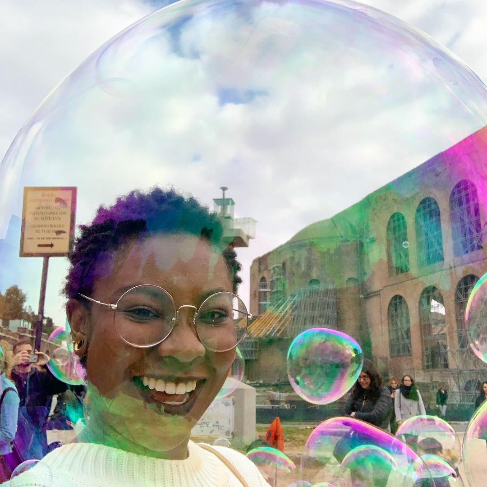

Ohene Ama
Commonly known as Prince(ss) Appau
Some Deets
I'm a Ghanaian-American with wild dreams. Catch me on your closest continent, I'll find any excuse to travel for a slice of cheesecake (self proclaimed Cheesecake Connoisseur). I like to contemplate meaning of life with my eyes closed, aka nap.
I don't talk about age in numbers but in levels (I hit level 23 this November). When I was at a lower level in life, I thought I would be a fine artist focusing in paints. In secondary school, my superlative was most artistic person/most likely to be an artist. Now my creative outlets are a combination of illustration, conceptual design, and sewing motivated by the sights and experiences I have witnessed while traveling the world. When I'm in a country for long enough,I do end up involved in the musical theatre scene.
Things in My Pockets:
- Plans for World Domination
- Phone
- Wallet
- Keys
- The nonexistent remains of my soul
We Can't Be Friends If:
- You appreciate creatures with many legs
- You hate manga and/or anime
- You are ALSO plotting World Domination
Some Strange Things:
- I can dislocate my right shoulder.
- My liver is a nonconformist and shifts out of place.
- I start the day with a cup of water and popping my ankles.